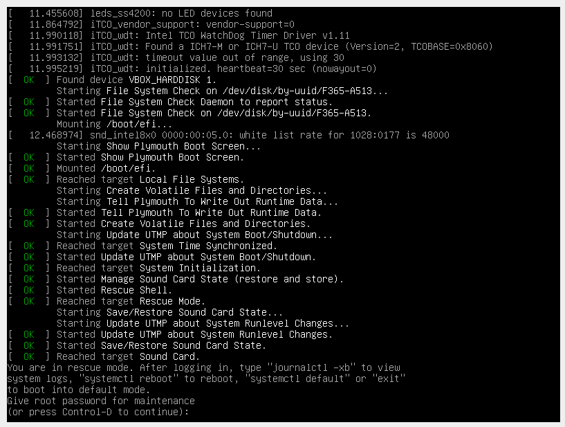

Техническая информация
Отзывы
Любитель линукса:
Лучший дистрибутив в мире
Любитель линукса:
Лучший дистрибутив в мире
Любитель линукса:
Лучший дистрибутив в мире
Любитель линукса:
Лучший дистрибутив в мире
Лучший дистрибутив в мире
Лучший дистрибутив в мире
Лучший дистрибутив в мире
Лучший дистрибутив в мире
Техническая информация
Основа: Ядро Linux (последняя стабильная версия).
Системный загрузчик: GRUB или systemd-boot.
Базовые компоненты:
Ядро Linux, systemd, glibc, bash, основные утилиты GNU (coreutils).
Опциональные компоненты (устанавливаются вручную):
Графическое окружение (Xorg, Wayland, GNOME, KDE Plasma, XFCE и т.д.).
Драйверы устройств (видео, звук, сеть и т.д.).
Инструменты разработки (gcc, make и т.д.).
Приложения (браузер, текстовый редактор, офисный пакет и т.д.).
Требования к оборудованию:
Процессор: Любой процессор, поддерживаемый ядром Linux.
Оперативная память: 512 МБ (рекомендуется 1 ГБ и более).
Место на диске: 5 ГБ (рекомендуется 10 ГБ и более).
Руководство по установке
1. Загрузка образа ISO:
Купите.
2. Создание загрузочной флешки/диска:
Используйте программу Rufus, Etcher или dd для создания загрузочной флешки/диска.
3. Загрузка с флешки/диска:
Перезагрузите компьютер.
Во время загрузки нажмите клавишу, соответствующую выбору загрузочного устройства (обычно Del, F2, F12).
В BIOS/UEFI выберите загрузку с флешки/диска.
4. Начало установки:
Загрузится минимальная система Linux.
Следуйте инструкциям на экране для входа в систему (обычно под именем root без пароля или с паролем, указанным в документации).
5. Подключение к сети:
Подключитесь к сети с помощью команды `ip` или `dhcpcd` (зависит от дистрибутива).
Убедитесь, что есть доступ к интернету (`ping google.com`).
6. Разметка диска:
Создайте как минимум два раздела: корневой (`/`) и swap (обмен).
7. Создание файловой системы:
Используйте команду `mkfs` для создания файловой системы на созданном разделе (например, `mkfs.ext4 /dev/sda1`).
8. Монтирование разделов:
Смонтируйте корневой раздел в `/mnt` (`mount /dev/sda1 /mnt`).
Создайте каталог `/mnt/boot` и смонтируйте раздел, предназначенный для загрузчика, в `/mnt/boot` (если он существует).
9. Установка базовой системы:
Используйте утилиту `pacstrap` (Arch Linux), `debootstrap` (Debian) или аналогичную для установки базовых пакетов в `/mnt`.
10. Настройка системы:
Сгенерируйте файл `/mnt/etc/fstab` (используйте `genfstab` или отредактируйте вручную).
Скопируйте файл `/etc/resolv.conf` в `/mnt/etc/resolv.conf` (если он существует).
Chroot в новую систему (`arch-chroot /mnt` или `chroot /mnt /bin/bash`).
Настройте часовой пояс (`ln -sf /usr/share/zoneinfo/Europe/Moscow /etc/localtime`).
Установите имя хоста (`echo "myhostname" > /etc/hostname`).
Установите пароль для root (`passwd`).
11. Установка загрузчика:
Установите загрузчик GRUB или systemd-boot.
Настройте загрузчик в соответствии с вашей системой (смотрите документацию дистрибутива).
12. Перезагрузка:
Выйдите из chroot (`exit`).
Отмонтируйте все разделы (`umount /mnt/boot`, `umount /mnt`).
Перезагрузите компьютер (`reboot`).